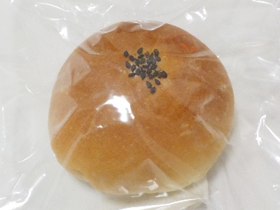

おろち湯ったり館であんぱんを買いました。
更新日 : 2026/01/18

杜のパン屋に行きたいと思っていたんですが、行って売り切れだったら嫌だなと行けてませんでした。
でも温泉で買えてしまった。
小さいあんぱん1個160円です。
袋を開けるとパンのいい匂いがしました。パン自体の味もとっても美味しい。
バターの味が強いので、普通のアンパンとは少し違ってお菓子風な感じがしました。よくあるアンバターのパンはバター多くて味が強いですが、これは程よく食べやすくいい感じだと思いました。
見慣れましたがアンバターって冷静に見たら凄い油ですよね。